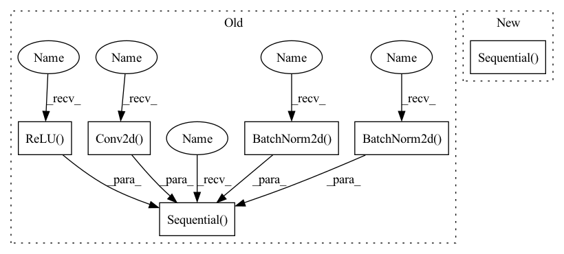

Pattern ID :1889

Before Change
def __init__(self, n_channel: int) -> None:
super(DummyEpsModel, self).__init__()
self.conv = nn.Sequential( // with batchnorm
nn.Conv2d(n_channel, 128, 7, padding=3),
nn.BatchNorm2d(128),
nn.ReLU(),
nn.Conv2d(128, 128, 7, padding=3),
nn.BatchNorm2d(128),
nn.ReLU(),
nn.Conv2d(128, 64, 7, padding=3),
nn.BatchNorm2d(64),
nn.ReLU(),
nn.Conv2d(64, 16, 7, padding=3),
nn.BatchNorm2d(16),
nn.ReLU(),
nn.Conv2d(16, n_channel, 3, padding=1),
)
def forward(self, x, t) -> torch.Tensor:
// Lets think about using t later
return self.conv(x)
After Change
def __init__(self, n_channel: int) -> None:
super(DummyEpsModel, self).__init__()
self.conv = nn.Sequential( // with batchnorm
blk(n_channel, 64),
blk(64, 128),
blk(128, 256),
blk(256, 512),
blk(512, 256),
blk(256, 128),
blk(128, 64),
nn.Conv2d(64, n_channel, 3, padding=1),
)
def forward(self, x, t) -> torch.Tensor:
// Lets think about using t later
return self.conv(x)
In pattern: SUPERPATTERN
Frequency: 3
Non-data size: 6
Instances
Fragment ID: 4629190
Project Name: cloneofsimo/mindiffusion
Commit Name: fdfff425ddaa29fc6bd02408c1c8c41370cb087f
Time: 2022-04-15
Author: cloneofsimo@gmail.com
File Name: superminddpm.py
M Class Name: DummyEpsModel
N Class Name: DummyEpsModel
M Method Name: __init__(2)
N Method Name: __init__(2)
M Parent Class: nn.Module
N Parent Class: nn.Module
M File Name: superminddpm.py
N File Name: superminddpm.py
M Start Line: 53
M End Line: 67
N Start Line: 63
N End Line: 72
'>
Before Change
def __init__(self, n_channel: int) -> None:
super(DummyEpsModel, self).__init__()
self.conv = nn.Sequential( // with batchnorm
nn.Conv2d(n_channel, 128, 7, padding=3),
nn.BatchNorm2d(128),
nn.ReLU(),
nn.Conv2d(128, 128, 7, padding=3),
nn.BatchNorm2d(128),
nn.ReLU(),
nn.Conv2d(128, 64, 7, padding=3),
nn.BatchNorm2d(64),
nn.ReLU(),
nn.Conv2d(64, 16, 7, padding=3),
nn.BatchNorm2d(16),
nn.ReLU(),
nn.Conv2d(16, n_channel, 3, padding=1),
)
def forward(self, x, t) -> torch.Tensor:
// Lets think about using t later
return self.conv(x)
After Change
def __init__(self, n_channel: int) -> None:
super(DummyEpsModel, self).__init__()
self.conv = nn.Sequential( // with batchnorm
blk(n_channel, 64),
blk(64, 128),
blk(128, 256),
blk(256, 512),
blk(512, 256),
blk(256, 128),
blk(128, 64),
nn.Conv2d(64, n_channel, 3, padding=1),
)
def forward(self, x, t) -> torch.Tensor:
// Lets think about using t later
return self.conv(x)
'>
Fragment ID: 4629191
Project Name: cloneofsimo/mindiffusion
Commit Name: fdfff425ddaa29fc6bd02408c1c8c41370cb087f
Time: 2022-04-15
Author: cloneofsimo@gmail.com
File Name: superminddpm.py
M Class Name: DummyEpsModel
N Class Name: DummyEpsModel
M Method Name: __init__(2)
N Method Name: __init__(2)
M Parent Class: nn.Module
N Parent Class: nn.Module
M File Name: superminddpm.py
N File Name: superminddpm.py
M Start Line: 53
M End Line: 67
N Start Line: 63
N End Line: 72
'>
Before Change
class conv_block(nn.Module):
def __init__(self,ch_in,ch_out):
super(conv_block,self).__init__()
self.conv = nn.Sequential(
nn.Conv2d(ch_in, ch_out, kernel_size=3,stride=1,padding=1,bias=True),
nn.BatchNorm2d(ch_out),
nn.ReLU(inplace=True),
nn.Conv2d(ch_out, ch_out, kernel_size=3,stride=1,padding=1,bias=True),
nn.BatchNorm2d(ch_out),
nn.ReLU(inplace=True)
)
def forward(self,x):
x = self.conv(x)
After Change
class UBlock(nn.Module):
def __init__(self, in_channels, out_channels, numResNetBlocks, num_groups = 32, skip_connection_scale=1, swish=1.0, skip_path=False) -> None:
super(UBlock, self).__init__()
self.upblock = nn.Sequential(
nn.Upsample(scale_factor=2),
nn.Conv2d(in_channels, out_channels, 3, 1, 1)
)
self.resblocks = nn.ModuleList([ResNetBlock(in_channels, num_groups, skip_connection_scale, swish, skip_path=skip_path) for i in range(numResNetBlocks)])
def forward(self, x):
for resblock in self.resblocks:
'>
Fragment ID: 4629184
Project Name: atharvbhat/plus-ultra
Commit Name: 03d62302ad59610a32dfa219ac961dd52def9352
Time: 2022-05-30
Author: bhat.atharv@gmail.com
File Name: model.py
M Class Name: conv_block
N Class Name: UBlock
M Method Name: __init__(8)
N Method Name: __init__(3)
M Parent Class: nn.Module
N Parent Class: nn.Module
M File Name: model.py
N File Name: model.py
M Start Line: 32
M End Line: 41
N Start Line: 61
N End Line: 67
'>
Before Change
):
super().__init__()
self.layer = nn.Sequential(
nn.Conv2d(in_channels, in_channels, kernel_size=kernel_size,
bias=False, stride=stride, padding=padding, groups=in_channels),
nn.ReLU(inplace=True),
nn.BatchNorm2d(in_channels),
nn.Conv2d(in_channels, out_channels, kernel_size=1,
stride=1, bias=False, padding=0),
nn.ReLU(inplace=True),
nn.BatchNorm2d(out_channels),
)
def forward(self, x):
return self.layer(x)
After Change
self.padding = kernel_size // 2
super().__init__()
self.branch1 = nn.Sequential(
blocks.DepthwiseConv2d(inp, inp, kernel_size,
stride=1, padding=self.padding),
blocks.PointwiseBlock(inp, oup, groups=groups)
)
self.branch2 = nn.Identity()
self.combine = blocks.Combine("ADD")
self.relu = nn.ReLU(inplace=True)
'>
Fragment ID: 4629273
Project Name: ffiirree/cv-models
Commit Name: 4c9ed7edb86670cd5f91cf01a8525b25471f1ff0
Time: 2021-07-21
Author: ice_qi@163.com
File Name: models/dwnet.py
M Class Name: DWBlock
N Class Name: DwPwResBlock
M Method Name: __init__(5)
N Method Name: __init__(6)
M Parent Class: nn.Module
N Parent Class: nn.Module
M File Name: models/dwnet.py
N File Name: models/dwnet.py
M Start Line: 15
M End Line: 28
N Start Line: 33
N End Line: 44